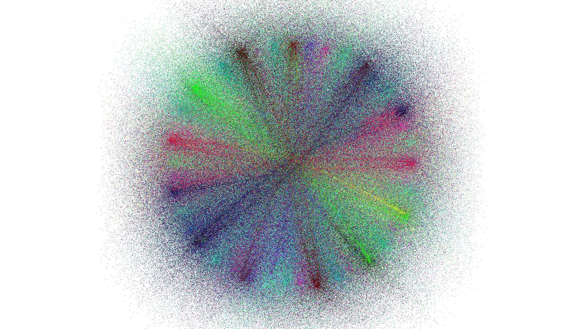
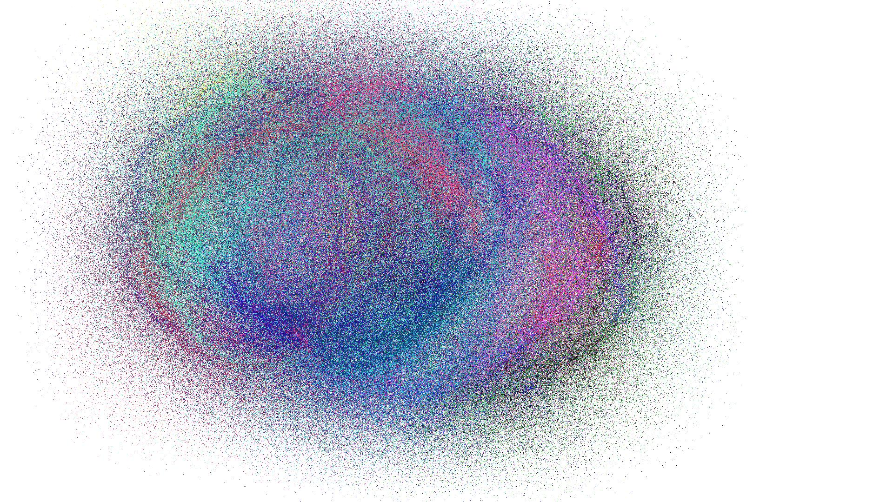
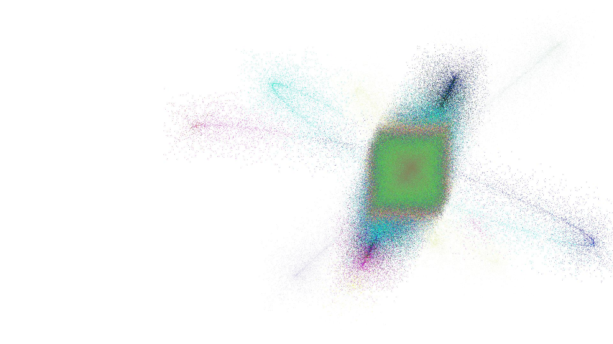

2022-x-15
A pendulum filled with sand can leave a trace on the ground. A small tribute to Foucault and the pendulum he used to demonstrated the rotation of our planet.

The wind
On the Argentinean coasts there is sand and, almost always, also wind. The sand can't leave a precise path if there is a lot of wind.


The mass
Of course, if a pendulum filled with sand leaves a trail it will weight less and less still the air around it could slow it down. It would no longer be able to move for so long.
